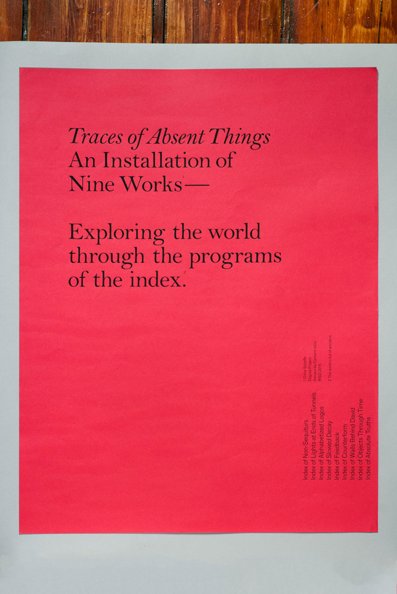
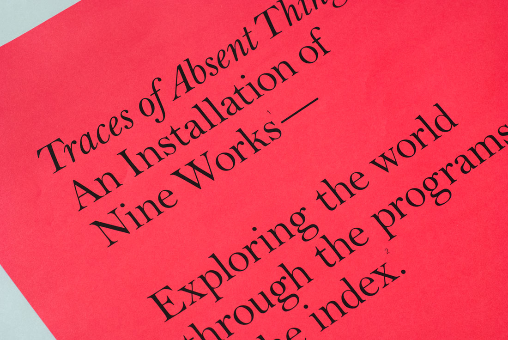

Traces of Absent Things
Title page
16 x 20" (and all following)
2015
Index of Non-Sequiturs
Index of Lights at Ends of Tunnels
Index of Alphabetized Logos
Index of Slowed Decay
Index of Feedback
Index of Counterform
Index of Walls Behind David
Index of Objects Through Time
Index of Absolute Truths

